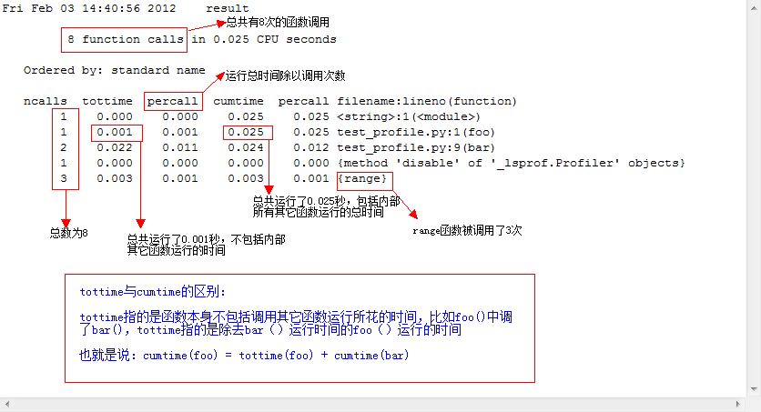

Python性能分析 (Profiling)
性能分析（Profiling）可用于分析程序的运行时间主要消耗在何处，以便有效优化程序的运行效率。
Profiling可分为两步，一是运行程序收集程序不同部分运行时间的数据，二是数据的可视化和分析。
profile, cProfile, hotshot
http://www.cnblogs.com/btchenguang/archive/2012/02/03/2337112.html
https://docs.python.org/2/library/profile.html?highlight=cprofile
Python标准库提供了3个不同的性能分析器：
- cProfile，推荐给大部分的用户，是C的一个扩展应用，因为其合理的运行开销，所以适合分析运行时间较长的。是基于lsprof。
- profile，一个纯python模块，它的接口和cProfile一致。在分析程序时，增加了很大的运行开销。如果你想扩展profiler的功能，可以试着继承这个模块
- hotshot, 一个试验性的c模块，关注减少分析时的运行开销，但是是以需要更长的数据后处理的次数为代价。不过这个模块不再被维护，也有可能在新的python版本中被弃用。
import cProfile
# 以下调用将运行函数somefunc()，并将相关数据记录到log_file.pyprof
cProfile.run('somefunc()', 'log_file.pyprof')
# 直接从命令行调用cProfile模块执行, 不必修改源文件
python -m cProfile -o profile_data.pyprof script_to_profile.py
分析结果图解

pState
无论使用哪个剖分器，它的剖分数据都可以保存到二进制文件，如foo.prof。分析和查看剖分结果文件需要使用 pstats 模块，它极具伸缩性， 可以输出形式多样的文本报表，是文本界面下不可或缺的工具。
使用 pstats 分析剖分结果很简单，几行代码就可以了：
import pstats
p = pstats.Stats("foo.prof")
p.sort_stats("time").print_stats()
除了编编程接口外，pstats 还提供了友好的命令行交互环境，在命令行执行
python –m pstats
就可以进入交互环境， 在交互环境里可以使用:
- help 查看所有可用的命令
- read/add 读入/加载剖分结果文件，
- stats 用以查看报表
- callees 和 callers 用以查看特定函数的被调用者和调用者
- sort 对剖析数据排序
Gprof2Dot, RunSnakeRun, KCacheGrind
- 图形化工具
comments powered by Disqus